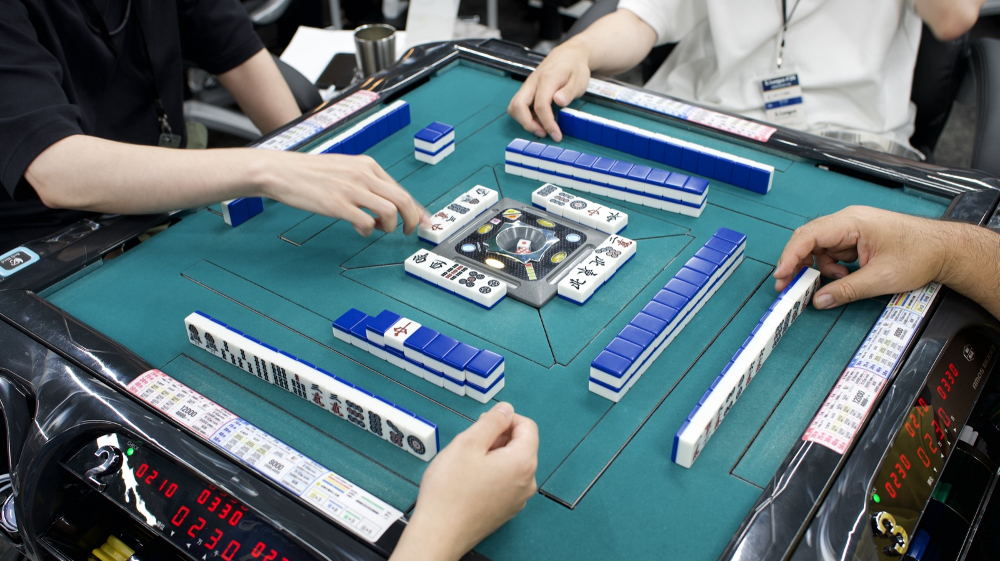
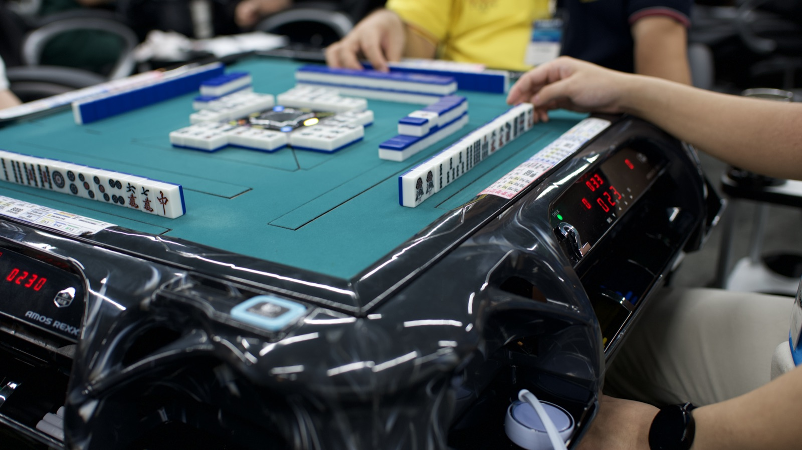
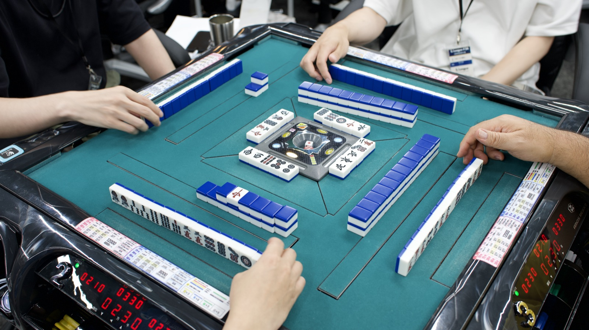
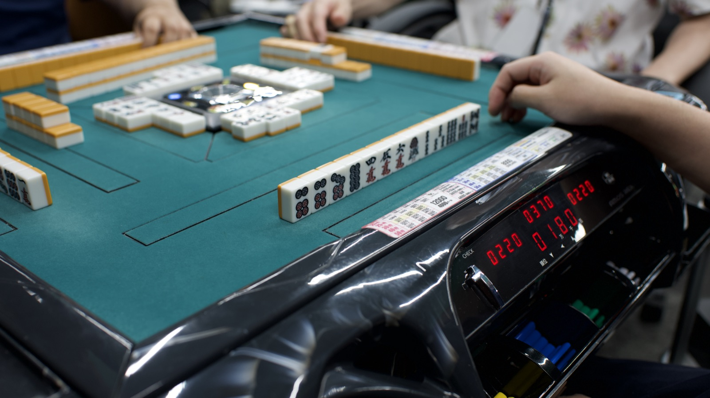

Gallery
前回大会の様子
写真は2026年7月25日開催の S.League 24 のものです。
当日の空気感を、先取りしてお届けします。






2026年10月18日 (日) 12:00〜20:00
1日8時間で全7戦を行います。予選6回戦を戦い、夕食をはさんで全員参加の順位決定戦へと進みます。ノーレートの健康麻雀で、最後の1戦まで本気で打ち切る個人戦です。
S.League は、2022年から24回・延べ367名が参加してきた健康麻雀のコミュニティです。主催の LUMA は、RMU 河野高志プロ率いる RTB2026「チーム 大奥」のチームスポンサーを務めております。
基本的には Mリーグルールに準拠します。1日開催の個人戦にともない、以下の点を S.League 25 独自ルールとして適用いたします。
基本的にMリーグルールに準拠します。喰いタンあり・後付けあり・一発あり・裏ドラありで進行します。
S.League 25 は個人戦ですので、おひとりでのお申込みを歓迎いたします。最終順位は全7戦の合計ポイントで決定し、成績は S.League 通算成績データベースへ反映いたします。
1日8時間の大会のため、予選6回戦+順位決定戦1回戦の全7戦を行います。予選6回戦を終えた時点で夕食休憩をとり、その後に全員が参加する順位決定戦で最終順位を確定します。順位決定戦の卓組は、予選順位に応じて決定いたします。
各回戦は 50分打ち切り とします。50分が経過した時点で行われている局をもって終了とします。それぞれの半荘の間に 10分程度の小休憩 を挟みます。
予選6回戦終了後に夕食休憩 (45分程度) をとります。夕食の後に、最終戦となる順位決定戦へ進みます。
チョンボは 基本的にアガリ放棄 とします。ただし、悪質と運営が認めた場合に限り 卓外 -20pt のペナルティを科します。
※ 上記以外の細部の裁定は運営の判断によります。当日の開会式でも改めてご説明します。
11:50の受付から20:00頃の閉会まで、全7戦 (予選6回戦+順位決定戦) を打つ1日 (8時間) の大会です。卓組など詳しい進行につきましては、開催前にご参加の皆様へ個別にご案内いたします。
※ 時間は目安です。進行状況により前後する場合があります。
写真は2026年7月25日開催の S.League 24 のものです。
当日の空気感を、先取りしてお届けします。




クレジットカード (Square) と銀行振込からお選びいただけます。
お申込みはフォームから3分ほどで完了します。
定員12名 (3卓) に達し次第、締切を待たずに受付を終了いたします。
開催日: 2026年10月18日 (日) 12:00〜20:00 · 個人戦 · 定員12名 (3卓)
おひとりでのお申込みを歓迎いたします。対象は初中級以上の方で、プロ雀士も参加します。
銀行振込でお申込みの方には、フォームの送信後に振込先をメールでご案内します。
お申込み手続きの完了をもって、以下のポリシーにご同意いただいたものとみなします。
キャンセルポリシー /
特定商取引法に基づく表記 /
プライバシーポリシー
ご不明な点は お問い合わせフォーム よりご連絡ください。
S.League を主催している本人が、LUMA Frame の名前で写真を撮っています。大会当日の記念撮影も承ります。
チームでの一枚も